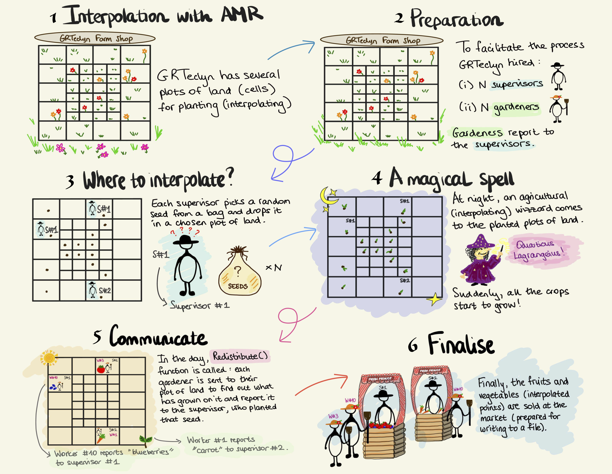

Particle Interpolator
Overview
GRTeclyn uses particles to interpolate evolved fields on the computational grid. Particles are placed at the positions where interpolation is required and the field values are interpolated to those particle locations. Hence, the particles here play a role of a "special" data containter. Using particles lets us reuse AMReX's existing machinery for locating interpolation points on the AMR grid. AMReX determines which level, grid and MPI rank owns each particle and handles the required communication automatically, which means less book-keeping for us!
Interpolation is performed using a Lagrange interpolation algorithm of arbitrary order, with fourth-order interpolation typically used by default. AMReX particles support several possible memory layouts for particle data. In GRTeclyn, interpolated values are stored using a Struct-of-Arrays (SoA) layout.
If you are not familiar with the AMReX particle interface, see the AMReX particle documentation.
The main class used for interpolation in GRTeclyn is ParticleInterpolator. This class is templated over the number of components, i.e. the number of variables to be interpolated. It handles the interpolation logic, boundary conditions treatment, interaction between the particles and the mesh data and many other things.
Warning
Currently, ParticleInterpolator supports interpolation of multiple
components only when they are in the contiguous order!
For example, recall that state variables are assigned unique component indices in
CCZ4StateVariables.hpp. Here, the conformal factor $\chi$ and the metric component
$h_{11}$ occupy consecutive component indices, so they can be interpolated
together. In contrast, $\chi$ and the extrinsic curvature $K$ cannot be
interpolated together, as their component indices are not contiguous!
Our ParticleInterpolator supports both state and derived variables.
Note
The interpolation setup differs slightly depending on whether state or derived variables are being interpolated.
Both cases will be described in more detail below.
Quick start
To use the particle interpolator, first define an interpolation query specifying:
- where interpolation should take place (i.e. coordinate positions)
- which component(s) should be interpolated.
Queries are generated by the InterpolationQueryParticle class.
Defining query for a state variable
The following example defines two interpolation points and requests interpolation of component 0 of the state variables:
// random interpolation positions
std::vector<double> interp_x = {0, 1};
std::vector<double> interp_y = {1, 1};
std::vector<double> interp_z = {1, 1};
// storage for the interpolated values
std::vector<double> out_interp(2);
// define query
int num_points = 2;
InterpolationQueryParticle query(2);
query.setCoords(0, interp_x.data())
.setCoords(1, interp_y.data())
.setCoords(2, interp_z.data())
.addComp(0, out_interp, VariableType::state);
VariableType::state is the default variable type, so it may be omitted when appropriate.
Defining query for a derived variable
The query for a derived variable is constructed in essentially the same way, but there are two additional requirements:
- Set the variable type to
VariableType::derived. - Specify the parity of the derived variable using
BCParity, for exampleBCParity::even.
For example:
query.addComp(0, out_interp, VariableType::derived, BCParity::even);
See the definition of InterpolationQueryParticle::addComp() for the complete list of arguments.
Note that the component index supplied to addComp() refers to the component within the selected variable group. For derived quantities, a single derived group may contain multiple components.
Setting up the interpolator
Once the query has been defined, create and setup a ParticleInterpolator:
constexpr int num_components = 1;
int verbosity = 1;
ParticleInterpolator<num_components> my_interpolator;
my_interpolator.setup(&gr_amr, sim_params.boundary_params, verbosity);
Here:
gr_amris the AMR object that you would have already createdsim_params.boundary_paramscontains the information on the boundary conditionsverbositycontrols the amount of diagnostic output
The template parameter num_components must correspond to the number of components that will be interpolated. In this example, num_components = 1.
Performing the interpolation
For state variables, interpolation is then performed simply by passing the query to the interpolator:
my_interpolator.interp(query);
For derived variables, two additional pieces of information are required:
- the name of the derived group, for example
"Weyl4" - the time at which the derived quantity should be evaluated
For example, schematically:
my_interpolator.interp(query, "Weyl4", time);
See the definition of ParticleInterpolator::interp() for the complete set of arguments.
For a minimal working example, see the ParticleInterpolatorUnitTest.
Other capabilities
-
Particles in AMReX can only exist inside the domain. If you use reflective (aka symmetric) boundary conditions,
ParticleInterpolatorwill automatically reflect particles back into the physical domain usingParticleInterpolator::reflect_particle(). Whether this is done is determined from the boundary condition parameters you provide inParticleInterpolator::setup(). -
We also check whether the points you provide in the query are valid using
ParticleInterpolator::check_domain(). If you encounter any issues or you think we missed a special case, please let us know. -
ParticleInterpolatorapplies the parity to interpolated fields automatically. Whilst the parity for state variables is defined directly in the source code (see e.g.CCZ4StateVariables.hpp), you have to provide the required parities for derived variables. -
If the grid layout changes during the simulation, we must call
Redistribute()on our particles to ensure that the particles have been reassigned to the correct levels, grids and MPI ranks. In particular, the grid layout changes whenever we regrid. UsingParticleInterpolator::ensure_redistributed(), we automatically determine whether the particles need to be redistributed. -
Whilst the ownership of particles in the AMR grid is handled automatically by AMReX's particle machinery, additional complications arise when we also have different querying ranks. In most applications, such as GW extraction, only rank 0 makes the query. However, it is also possible for multiple ranks to have their own queried points. In particular, the ranks containing the queried points may be different from the ranks actually containing the answers (i.e. the interpolated values). In this case, we need to send the answers back to the querying ranks using MPI communication. Again, this is handled automatically within the
ParticleInterpolatorclass and you do not need to worry about it. This communication is facilitated by the helperMPIContextParticleandMPILayoutParticleclasses. In the section below we provide a simple example of such communication.
Example: matching interpolated answers back to query points
The main ingredients illustrated by this example are contained are contained in ParticleInterpolator::prepare_receive_buffers() and ParticleInterpolator::prepare_send_buffers() functions.
For the purpose of our toy example, suppose that after Redistribute() the current answering rank (e.g. rank 1) holds three particles:
Particle iquery Query rank (p.cpu()) Query index (p.id()) Interpolated value (answer)
A 0 0 2 10.5
B 1 1 0 20.7
C 2 0 5 30.1
Since particles A and C belong to queries made by rank 0, while particle B belongs to a query made by rank 1, the current rank has
- 2 answers to send to rank 0
- 1 answer to send to rank 1
The send buffers therefore have three entries in total:
const int total_send = 3;
m_answer_idx.resize(total_send); // query-point indices associated with answers
m_answer_data.resize(total_send); // actual answers; in the code we actually have m_answer_data[k][idx], with k being the number of components, but we remove it here for simplicity (assuming we have k = 1)
Note that MPI_Alltoallv requires the entries sent to a given rank to occupy a contiguous section of the send buffer. We therefore arrange the buffer as:
send-buffer position: 0 1 2
destination rank: 0 0 1
Defining a function answerDispl(r), which gives the starting position in the flat MPI send buffer for the answers that will be sent to rank r, we find:
answerDispl(0) = 0;
answerDispl(1) = 2;
All this means is that destination rank 0 starts from send-buffer position 0 but destination rank 1 starts from send-buffer position 2. This is just a special packaging we need for MPI_Alltoallv.
We also define:
std::vector<int> rank_counter(mpi_procs, 0);
where rank_counter[r] records how many answers have already been placed into the section of the send buffer corresponding to rank r.
Initially:
rank_counter = [0, 0]
But then for each particle its position in the send buffer is calculated as:
const int idx =
m_mpi.answerDispl(query_rank) + rank_counter[query_rank]++;
So, for particle A:
iquery = 0
query_ranks[0] = 0
query_indices[0] = 2
comp_values[0] = 10.5
Here, comp_values[0] = 10.5 is the interpolated value that was previously stored in the particle SoA and copied into comp_values in prepare_send_buffers().
Particle A is the first answer being packed for rank 0, so
answerDispl(0) = 0
rank_counter[0] = 0
and its position in the MPI send buffer is
idx = answerDispl(query_rank) + rank_counter[query_rank]
= answerDispl(0) + rank_counter[0]
= 0 + 0
= 0
Note the way we determine idx here using increments:
const int idx =
m_mpi.answerDispl(query_rank) + rank_counter[query_rank]++;
so rank_counter[0] becomes 1 after idx is calculated.
The original query index, stored in query_indices[iquery] and the corresponding interpolated value, stored in comp_values[iquery], are then written to the same send-buffer position idx:
m_answer_idx[idx] = query_indices[iquery];
m_answer_data[idx] = comp_values[iquery];
For particle A this gives
m_answer_idx[0] = query_indices[0]; // = 2
m_answer_data[0] = comp_values[0]; // = 10.5
Playing the same game for particles B and C, the final packed send buffers are:
send-buffer position 0 1 2
particle A C B
iquery 0 2 1
destination rank 0 0 1
m_answer_idx 2 5 0
m_answer_data 10.5 30.1 20.7
Recall that before packing, the particles were encountered in the order:
Particle A B C
iquery 0 1 2
query_ranks 0 1 0
query_indices 2 0 5
interpolated value 10.5 20.7 30.1
The packing step changes the order from A, B, C to A, C, B, so that all answers destined for rank 0 are contiguous and appear before the answer destined for rank 1.
Painful, right?
